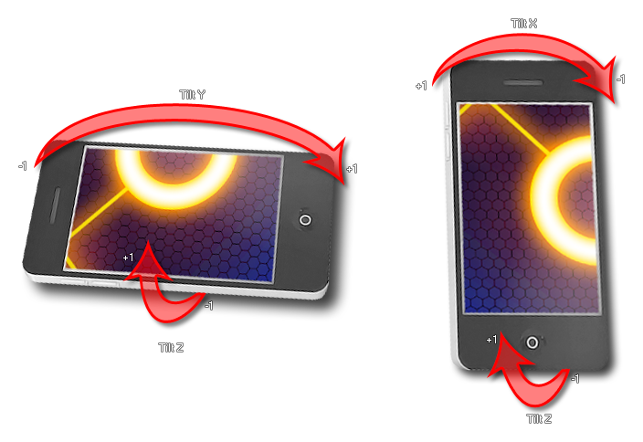

device_get_tilt_x()
Devoluciones: Real
Esta función devuelve un valor entre -1 y 1 según el ángulo de "inclinación" del dispositivo. La correlación real entre los grados de inclinación y el valor devuelto depende del dispositivo y sistema operativo que utiliza, pero generalmente un valor de 1 o -1 es igual a +/- 90 °. La imagen a continuación muestra cómo cada una si las funciones disponibles se relacionan con el dispositivo: 
if display_get_orientation() =
display_landscape
{
x += sign(device_get_tilt_y());
}
else
{
x += sign(device_get_tilt_x());
}
El código anterior verifica la orientación de la pantalla y luego usa el valor de inclinación correspondiente para mover el reproductor a lo largo del eje x.